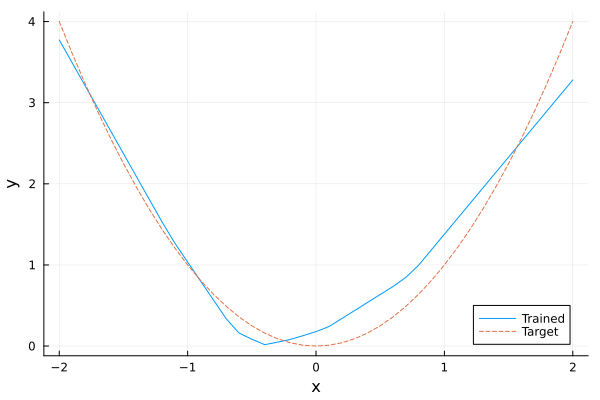

Input Convex Neural Networks with Flux.jl
This tutorial shows how to embed an input convex neural network (ICNN) model from Flux.jl into JuMP.
Required packages
This tutorial requires the following packages:
using JuMP
import Flux
import HiGHS
import MathOptAI
import Plots
import RandomBuilding the ICNN
The following custom layer can be used to build ICNNs. This layer has two forward methods. One that takes a single input and the other takes a Tuple. They both return the result of the forward pass as well as the original input.
struct InputConvex{T,F}
weight_x::Matrix{T}
weight_z::Matrix{T}
bias::Vector{T}
σ::F
end
Flux.@layer(InputConvex, trainable = (weight_x, weight_z, bias))
function InputConvex(
((in_z, in_x), out)::Pair{Tuple{Int,Int},Int},
σ = identity;
init = Flux.glorot_uniform,
)
return InputConvex(init(out, in_x), init(out, in_z), init(out), σ)
end
function (c::InputConvex)(x::AbstractVector)
return c.σ.(c.weight_x * x .+ c.bias), x
end
function (c::InputConvex)((z, x)::Tuple)
return c.σ.(Flux.softplus.(c.weight_z) * z .+ c.weight_x * x .+ c.bias), x
end
function Base.show(io::IO, l::InputConvex)
m, n = size(l.weight_x)
print(io, "InputConvex((", size(l.weight_z, 2), ", $m) => $n")
if l.σ != identity
print(io, ", ", l.σ)
end
if l.bias == false
print(io, "; bias=false")
end
print(io, ")")
return
endHere's an example:
layer = InputConvex((8, 8) => 2, Flux.relu)InputConvex((8, 2) => 8, relu) # 34 parameterslayer(rand(8))([0.0, 0.0008845782474595776], [0.008587253730026778, 0.5124985579819826, 0.333243342733767, 0.10000291338465161, 0.45640671683348555, 0.7651377924723161, 0.3864691342941321, 0.6298023583583231])Next, we define a custom Chain to build the ICNN.
struct InputConvexChain{T<:Flux.Chain}
chain::T
end
InputConvexChain(layers...) = InputConvexChain(Flux.Chain(layers))
(model::InputConvexChain)(x) = first(model.chain(x))
function Base.show(io::IO, l::InputConvexChain)
println(io, "InputConvexChain(")
println.(io, "\t", l.chain)
println(io, ")")
return
endHere's an example:
chain = InputConvexChain(
InputConvex((8, 8) => 2, Flux.relu),
InputConvex((2, 8) => 1, Flux.relu),
)InputConvexChain(
InputConvex((8, 2) => 8, relu)
InputConvex((2, 1) => 8, relu)
)
chain(rand(8))1-element Vector{Float64}:
3.3225337216145157Building the Predictor
We need to implement build_predictor and add_predictor for InputConvexChain in order to be able to embed this network into JuMP.
struct InputConvexChainPredictor <: MathOptAI.AbstractPredictor
p::MathOptAI.Pipeline
end
function MathOptAI.build_predictor(
predictor::InputConvexChain;
config::Dict = Dict{Any,Any}(),
kwargs...,
)
(layer1, layers) = Iterators.peel(predictor.chain)
p = MathOptAI.Pipeline(
MathOptAI.Affine(layer1.weight_x, layer1.bias),
MathOptAI.build_predictor(layer1.σ; config),
)
for layer in layers
weights = hcat(Flux.softplus(layer.weight_z), layer.weight_x)
push!(p.layers, MathOptAI.Affine(weights, layer.bias))
push!(p.layers, MathOptAI.build_predictor(layer.σ; config))
end
return InputConvexChainPredictor(p)
end
function MathOptAI.add_predictor(
model::JuMP.AbstractModel,
predictor::InputConvexChainPredictor,
x::Vector;
kwargs...,
)
layers = predictor.p.layers
z, inner = MathOptAI.add_predictor(model, first(layers), x)
formulation = MathOptAI.PipelineFormulation(predictor, Any[inner])
for layer in layers[2:end]
z, inner = if layer isa MathOptAI.Affine
MathOptAI.add_predictor(model, layer, [z; x])
else
MathOptAI.add_predictor(model, layer, z)
end
push!(formulation.layers, inner)
end
return z, formulation
endWith that, we are now ready to embed these networks into JuMP.
Embed ICNN into JuMP
Let us build a small ICNN first.
predictor = InputConvexChain(
InputConvex((8, 8) => 2, Flux.relu),
InputConvex((2, 8) => 1, Flux.relu),
)InputConvexChain(
InputConvex((8, 2) => 8, relu)
InputConvex((2, 1) => 8, relu)
)
We can now embed predictor into a JuMP model. We choose to embed the Flux.relu using ReLUSOS1:
model = Model()
@variable(model, x[1:8])
config = Dict(Flux.relu => MathOptAI.ReLUSOS1)
z, formulation = MathOptAI.add_predictor(model, predictor, x; config);z1-element Vector{JuMP.VariableRef}:
moai_ReLU[1]formulationAffine(A, b) [input: 8, output: 2]
├ variables [2]
│ ├ moai_Affine[1]
│ └ moai_Affine[2]
└ constraints [2]
├ 0.3598726987838745 x[1] + 0.5835890769958496 x[2] + 0.6362516283988953 x[3] - 0.2026776373386383 x[4] + 0.01826966367661953 x[5] + 0.2202843874692917 x[6] - 0.6263319849967957 x[7] + 0.1432453989982605 x[8] - moai_Affine[1] = 0.1507670283317566
└ -0.08857592940330505 x[1] + 0.5278577208518982 x[2] + 0.11241771280765533 x[3] + 0.6079535484313965 x[4] + 0.056768614798784256 x[5] - 0.7580177783966064 x[6] - 0.0020634098909795284 x[7] + 0.448341429233551 x[8] - moai_Affine[2] = 0.05103561654686928
MathOptAI.ReLUSOS1()
├ variables [4]
│ ├ moai_ReLU[1]
│ ├ moai_ReLU[2]
│ ├ moai_z[1]
│ └ moai_z[2]
└ constraints [8]
├ moai_ReLU[1] ≥ 0
├ moai_z[1] ≥ 0
├ moai_Affine[1] - moai_ReLU[1] + moai_z[1] = 0
├ [moai_ReLU[1], moai_z[1]] ∈ MathOptInterface.SOS1{Float64}([1.0, 2.0])
├ moai_ReLU[2] ≥ 0
├ moai_z[2] ≥ 0
├ moai_Affine[2] - moai_ReLU[2] + moai_z[2] = 0
└ [moai_ReLU[2], moai_z[2]] ∈ MathOptInterface.SOS1{Float64}([1.0, 2.0])
Affine(A, b) [input: 10, output: 1]
├ variables [1]
│ └ moai_Affine[1]
└ constraints [1]
└ -0.35862997174263 x[1] - 0.49206307530403137 x[2] - 0.6910897493362427 x[3] + 0.09942997246980667 x[4] + 0.3605617582798004 x[5] - 0.15365122258663177 x[6] + 0.10383141040802002 x[7] + 0.6364549994468689 x[8] + 1.279222011566162 moai_ReLU[1] + 0.22226262092590332 moai_ReLU[2] - moai_Affine[1] = 0.813677191734314
MathOptAI.ReLUSOS1()
├ variables [2]
│ ├ moai_ReLU[1]
│ └ moai_z[1]
└ constraints [4]
├ moai_ReLU[1] ≥ 0
├ moai_z[1] ≥ 0
├ moai_Affine[1] - moai_ReLU[1] + moai_z[1] = 0
└ [moai_ReLU[1], moai_z[1]] ∈ MathOptInterface.SOS1{Float64}([1.0, 2.0])
Epigraph formulations
The nice thing about ICNNs is that we can formulate their epigraph and avoid adding binary variables to the model. For that, we can use ReLUEpigraph.
Let's first train a model to predict the relationship $y = x^2$. (Note that this is a very basic training loop.)
Random.seed!(1234)
chain = InputConvexChain(
InputConvex((1, 1) => 10, Flux.relu),
InputConvex((10, 1) => 1, Flux.relu),
)
begin
X = -2.0f0:0.1f0:2.0f0
optimizer_state = Flux.setup(Flux.Adam(1e-2), chain)
for epoch in 1:200
_, gradient = Flux.withgradient(chain) do model
return sum((only(model([x])) - x^2)^2 for x in X)
end
Flux.update!(optimizer_state, chain, only(gradient))
end
endNow we can embed the trained network into a JuMP model:
model = Model(HiGHS.Optimizer)
set_silent(model)
@variable(model, x[1:1])
config = Dict(Flux.relu => MathOptAI.ReLUEpigraph)
y, _ = MathOptAI.add_predictor(model, chain, x; config)
@objective(model, Min, only(y))
modelA JuMP Model
├ solver: HiGHS
├ objective_sense: MIN_SENSE
│ └ objective_function_type: JuMP.VariableRef
├ num_variables: 23
├ num_constraints: 33
│ ├ JuMP.AffExpr in MOI.EqualTo{Float64}: 11
│ ├ JuMP.AffExpr in MOI.GreaterThan{Float64}: 11
│ └ JuMP.VariableRef in MOI.GreaterThan{Float64}: 11
└ Names registered in the model
└ :xBecause we used the ReLUEpigraph predictor, there are no binary or integer variables in our model.
Moreover, we can show that the objective value y is convex with respect to x:
x_value, y_value = -2:0.1:2, Float64[]
for xi in x_value
fix(x[1], xi)
optimize!(model)
# To prove we are solving an LP and not a MIP, require dual solutions.
assert_is_solved_and_feasible(model; dual = true)
push!(y_value, objective_value(model))
end
Plots.plot(x_value, y_value; xlabel = "x", ylabel = "y", label = "Trained")
Plots.plot!(x_value, x_value .^ 2; label = "Target", linestyle = :dash)
This page was generated using Literate.jl.